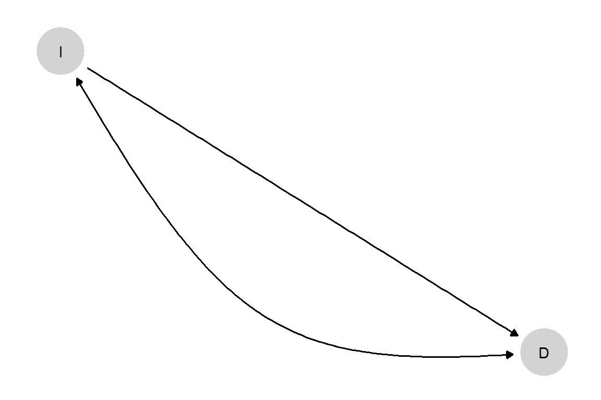

| \(\theta^Y\) | if \(X_1=0, X_2=0\) | if \(X_1=1,X_2=0\) | if \(X_1=0,X_2=1\) | if \(X_1=1, X_2=1\) |
|---|---|---|---|---|
| \(\theta^Y_{0000}\) | 0 | 0 | 0 | 0 |
| \(\theta^Y_{1000}\) | 1 | 0 | 0 | 0 |
| \(\theta^Y_{0100}\) | 0 | 1 | 0 | 0 |
| \(\theta^Y_{1100}\) | 1 | 1 | 0 | 0 |
| \(\theta^Y_{0010}\) | 0 | 0 | 1 | 0 |
| \(\theta^Y_{1010}\) | 1 | 0 | 1 | 0 |
| \(\theta^Y_{0110}\) | 0 | 1 | 1 | 0 |
| \(\theta^Y_{1110}\) | 1 | 1 | 1 | 0 |
| \(\theta^Y_{0001}\) | 0 | 0 | 0 | 1 |
| \(\theta^Y_{1001}\) | 1 | 0 | 0 | 1 |
| \(\theta^Y_{0101}\) | 0 | 1 | 0 | 1 |
| \(\theta^Y_{1101}\) | 1 | 1 | 0 | 1 |
| \(\theta^Y_{0011}\) | 0 | 0 | 1 | 1 |
| \(\theta^Y_{1011}\) | 1 | 0 | 1 | 1 |
| \(\theta^Y_{0111}\) | 0 | 1 | 1 | 1 |
| \(\theta^Y_{1111}\) | 1 | 1 | 1 | 1 |
2 Causal Models
Chapter summary
We provide a lay-language primer on the counterfactual model of causality and the logic of causal models. Topics include the representation of causal models with causal graphs and using causal graphs to read off relations of conditional independence among variables in a causal domain.
Causal claims are everywhere. Causal knowledge is often not just the goal of empirical social science, it is also an input into causal inference.1 Causal assumptions are hidden in seemingly descriptive statements: Claims that someone is guilty, or exploited, or powerful, or weak involve beliefs about how things would be if conditions were different. Even when scholars carefully try to avoid causal claim-making, causal verbs—depends, drives, produces, influences—are hard to avoid.
But while causal claims are commonplace, it is not always clear what exactly is meant by a causal relation and how causal knowledge about one thing can be marshaled to justify causal claims about another. For our purposes, the counterfactual view of causality addresses the first question. Causal models address the second. In this chapter, we discuss each in turn. The present chapter is largely conceptual, with ideas worked through with a couple of “toy” running examples. In Chapter 3, we then apply and illustrate many of the key concepts from this chapter by translating a few prominent arguments from the field of political science into the language of structural causal models.
2.1 The Counterfactual Model
We begin with what we might think of as a meta-model, the counterfactual model of causation. At its core, a counterfactual understanding of causation captures a simple notion of causation as “difference-making.”2 In the counterfactual view, to say that \(X\) caused \(Y\) is to say: had \(X\) been different, \(Y\) would have been different.
A causal effect, in this view, is the difference between two things (two values of \(Y\)) that might have happened. This means that by definition, causal effects are not measurable quantities. They are not differences between two observable outcomes in the world, but, at best, differences between one observable outcome and a second counterfactual outcome. For this reason, causal effects need to be inferred, not measured.
In this view, the antecedent, “had \(X\) been different,” imagines a controlled change in \(X\)—an intervention that alter \(X\)’s value—rather than a naturally arising difference in \(X\). The usual counterfactual claim, then, is not that \(Y\) is different from how it might have been had circumstances been such that \(X\) were different; it is, rather, that if one could somehow have made \(X\) different in a case, then \(Y\) would have been different in that case.3
Consider a simple example. Teacher A is extraordinary. Students with teacher A do not study and would perform well whether or not they studied. Students with teacher B perform well if and only if they study. Moreover, students with teacher B do in fact study. And all perform well.
When we say that one of teacher B’s students did well because they studied, we are comparing the outcome that they experienced to the outcome that they would have experienced if (1) they had had teacher B, as they did but (2) counterfactually, had not studied.
Notably, when we define the effect of studying, we are not comparing the realized outcome of the studiers to the outcome of the students who in fact did not study. That is because the students who in fact did not study had teacher A, not B. Moreover, we are not comparing the realized outcome of a student of teacher B to what that same student would have achieved if they had had teacher A (and for that reason, had not studied). The reason again is that this comparison includes the effect of having teacher A and not the effect of studying given they had teacher B.
Here is a second example, drawn from a substantive domain that we will return to many times in this book. In his seminal book on democracy and distribution, Carles Boix argues that low economic inequality is a cause of democratization (Boix 2003). At high levels of inequality, Boix argues, the elite would rather repress the poor than submit to democracy and its redistributive consequences; at low levels of inequality, in contrast, redistribution under democracy will be less costly for the elite than would continued repression. Now, in light of this theory, consider the claim that Switzerland democratized (\(D=1\)) because it had a relatively low level of economic inequality (\(I=0\)). In the counterfactual view, this claim is equivalent to saying that, if Switzerland had had a high level of inequality, the country would not have democratized. Low economic inequality made a difference. The comparison for the causal statement is with the outcome Switzerland would have experienced under an intervention that boosted its historic level of economic inequality (but made no other change)—not with how Switzerland would have performed if it had been like one of the countries that in fact had higher levels of inequality, cases that likely differ from Switzerland in other causally relevant ways.
2.1.1 Potential Outcomes
Researchers often employ what is called the “potential outcomes” framework when they need precise formal language for describing counterfactual quantities (Rubin 1974). In this framework, we characterize how a given unit responds to a causal variable by positing the outcomes that the unit would take on at different values of the causal variable. Most commonly, \(Y_i(0)\) and \(Y_i(1)\) are used to denote the values that \(Y\) would take for unit \(i\) if \(X\) were 0 and 1, respectively.4
One setting in which it is quite easy to think about potential outcomes is medical treatment. Imagine that some individuals in a diseased population have received a drug (\(X=1\)) while others have not received the drug (\(X=0\)). Assume that, subsequently, a researcher observes which individuals become healthy (\(Y=1\)) and which do not (\(Y=0\)). Given the assignments of all other individuals,5 we can treat each individual as belonging to one of four unobserved response “types,” defined by the outcomes that the individual would have if they received or did not receive treatment:6
- adverse: Those individuals who would get better if and only if they do not receive the treatment
- beneficial: Those who would get better if and only if they do receive the treatment
- chronic: Those who will remain sick whether or not they receive the treatment
- destined: Those who will get better whether or not they receive the treatment.
Table 2.1 maps the four types (\(a, b, c, d\)) onto their respective potential outcomes. In each column, we have simply written down the outcome that a patient of a given type would experience if they are not treated, and the outcome they would experience if they are treated. We are here always imagining controlled changes in treatment: the responses if treatments are changed without changes to other background (or pre-treatment) conditions in the case.
| Type a | Type b | Type c | Type d | |
|---|---|---|---|---|
| adverse | beneficial | chronic | destined | |
| Outcome if not treated | Healthy | Sick | Sick | Healthy |
| Outcome if treated | Sick | Healthy | Sick | Healthy |
We highlight that, in this framework, case-level causal relations are treated as deterministic. A given case has a set of potential outcomes. Any uncertainty about outcomes enters as incomplete knowledge of a case’s “type,” not from underlying randomness in causal relations. This understanding of causality—as ontologically deterministic, but empirically imperfectly understood—is compatible with views of causation commonly employed by qualitative researchers (see, e.g., Mahoney (2008)), and with understandings of causal determinism going back at least to Laplace (1901).
As we will also see, we can readily express this kind of incompleteness of knowledge within a causal model framework: Indeed, the way in which causal models manage uncertainty is central to how they allow us to pose questions of interest and to learn from evidence. Certainly, there are situations we could imagine in which one might want to conceptualize potential outcomes themselves as random (for instance, if individuals in different conditions play different lotteries). But for the vast majority of the settings we consider, not much of importance is lost if we treat potential outcomes as deterministic but possibly unknown: Every case is of a particular type; we just do not know which type that is.
2.1.2 A Generalization
Throughout the book, we generalize from this simple setup. Whenever we have one causal variable and one outcome, and both variables are binary (i.e., each can take on two possible values, 0 or 1), there are only four sets of possible potential outcomes, or “types.” More generally, for variable \(Y\), we will use \(\theta^Y\) to capture the unit’s “type”: the way that \(Y\) responds to its potential causes.7 We, further, add subscripts to denote particular types. Where there are four possible types, for instance, we use the notation \(\theta^Y_{ij}\), where the first subscript, \(i\), represents the case’s potential outcome when \(X=0\); and the second subscript, \(j\), is the case’s potential outcome when \(X=1\).
Adopting this notation, for a causal structure with one binary causal variable and a binary outcome, the four types can be represented as \(\{\theta^Y_{10}, \theta^Y_{01}, \theta^Y_{00}, \theta^Y_{11}\}\), as shown in Table 2.2:
| a: \(\theta^Y=\theta^Y_{10}\) | b: \(\theta^Y=\theta^Y_{01}\) | c: \(\theta^Y=\theta^Y_{00}\) | d : \(\theta^Y=\theta^Y_{11}\) | |
|---|---|---|---|---|
| Set \(X=0\) | \(Y(0)=1\) | \(Y(0)=0\) | \(Y(0)=0\) | \(Y(0)=1\) |
| Set \(X=1\) | \(Y(1)=0\) | \(Y(1)=1\) | \(Y(1)=0\) | \(Y(1)=1\) |
Returning to the matter of inequality and democratization to illustrate, let \(I=1\) represent a high level of economic inequality and \(I=0\) its absence; let \(D=1\) represent democratization and \(D=0\) its absence. \(\theta^D_{10}\) (or \(a\)) type is a case in which a high level of inequality, if it occurs, prevents democratization in a country that would otherwise have democratized. So the causal effect of high inequality in a case, \(i\), of \(\theta^D_{10}\) type is \(\tau_i= -1\). A \(\theta^D_{01}\) type (or \(b\) type) is a case in which high inequality, if it occurs, generates democratization in a country that would otherwise have remained non-democratic (effect of \(\tau_i= 1\)). A \(\theta^D_{00}\) type (\(c\) type) is a case that will not democratize regardless of the level of inequality (effect of \(\tau_i = 0\)); and a \(\theta^D_{11}\) type (\(d\) type) is one that will democratize regardless of the level of inequality (again, effect of \(\tau_i= 0\)).
In this setting, a causal explanation of a given case outcome amounts to a statement about its type. The claim that Switzerland’s low level of inequality was a cause of its democratization is equivalent to saying that Switzerland democratized and is a \(\theta^D_{10}\) type. To claim that Benin democratized because of high inequality is equivalent to saying that Benin democratized and is a \(\theta^D_{01}\) type. To claim, on the other hand, that Malawi democratized for reasons having nothing to do with its level of economic inequality is to characterize Malawi as a \(\theta^D_{11}\) type (which implies that Malawi would have been democratic no matter what its level of inequality).
Now, let us consider more complex causal relations. Suppose there are two binary causal variables \(X_1\) and \(X_2\). We can specify any given case’s potential outcomes for each of the different possible combinations of their causal conditions. There are now four such conditions since each causal variable may take on \(0\) or \(1\) when the other is at \(0\) or \(1\).
As for notation, we now need to expand \(\theta\)’s subscript since we need to represent the value that \(Y\) takes on under each of the four possible combinations of \(X_1\) and \(X_2\) values. This requires four, rather than two, subscript digits. We map the subscripting for \(\theta_{hijk}\) to potential outcome notation as shown in Equation Equation 2.1.
\[ \theta^Y_{hijk} = \left\{ \begin{array}{lll} Y(0,0) &=& h, \\ Y(1,0) &=& i, \\ Y(0,1) &=& j, \\ Y(1,1) &=& k \end{array} \right. \tag{2.1}\]
where the first argument of \(Y(.,.)\) is the value to which \(X_1\) is set and the second is the value to which \(X_2\) is set.
Thus, for instance, \(\theta^Y_{0100}\) means that \(Y\) is 1 if \(X_1\) is set to 1 and \(X_2\) to 0 and is 0 otherwise; \(\theta^Y_{0011}\) is a type in which \(Y=1\) if and only if \(X_2=1\); \(\theta^Y_{0001}\) is a type for which \(Y=0\) unless both \(X_1\) and \(X_2\) are 1.
We now have 16 causal types for this node: 16 different patterns that \(Y\) might display in response to changes in \(X_1\) and \(X_2\). The full set is represented in Table 2.3, which also illustrates how we read types off of four-digit subscripts. For instance, the table shows us that for nodal type \(\theta^Y_{0101}\), \(X_1\) has a positive causal effect on \(Y\) but \(X_2\) has no effect. On the other hand, for type \(\theta^Y_{0011}\), \(X_2\) has a positive effect while \(X_1\) has none.
The 16 types also capture interactions. For instance, for a \(\theta^Y_{0001}\) type, \(X_2\) has a positive causal effect if and only if \(X_1\) is 1. For that type, \(X_1\) and \(X_2\) serve as “complements.” For \(\theta^Y_{0111}\), \(X_2\) has a positive causal effect if and only if \(X_1\) is 0. For that type, \(X_1\) and \(X_2\) are “substitutes.”
This is a rich framework in that it allows for all the possible ways in which a set of multiple causes can interact with each other. Often, when seeking to explain the outcome in a case, researchers proceed as though causes are necessarily rival, where \(X_1\) being a cause of \(Y\) implies that \(X_2\) was not. Did Malawi democratize because it was a relatively economically equal society or because of international pressure to do so? In the counterfactual model, however, causal relations can be nonrival. If two out of three people vote for an outcome under majority rule, for example, then both of the two supporters caused the outcome: The outcome would not have occurred if either supporter’s vote were different. A typological, potential-outcomes conceptualization provides a straightforward way of representing this kind of complex causation.
Because of this complexity, when we say that \(X\) caused \(Y\) in a given case, we will generally mean that \(X\) was a cause, not the (only) cause. Malawi might not have democratized if either a relatively high level of economic equality or international pressure had been absent. For most social phenomena that we study, there will be multiple, and sometimes a great many, difference-makers for any given case outcome.
We will mostly use \(\theta^Y_{ij}\)-style notation in this book to refer to types. We will, however, occasionally revert to the simpler \(a, b, c, d\) designations when that eases exposition. As types play a central role in the causal-model framework, we recommend getting comfortable with both forms of notation before going further.
Using the same framework, we can generalize to structures in which a unit has any number of causes and also to cases in which causes and outcomes are nonbinary. As one might imagine, the number of types increases rapidly (very rapidly) as the number of considered causal variables increases; it also increases rapidly if we allow \(X\) or \(Y\) to take on more than two possible values. For example, if there are \(n\) binary causes of an outcome, then there can be \(2^{\left(2^n\right)}\) types of this form: that is, \(k=2^n\) combinations of values of causes to consider, and \(2^k\) distinct response patterns across the possible combinations. If causes and outcomes are ternary instead of binary, we have \(3^{\left(3^n\right)}\) causal types.
Nevertheless, the basic principle of representing possible causal relations as patterns of potential outcomes remains unchanged, at least as long as variables are discrete.
2.1.3 Summaries of Potential Outcomes
So far, we have focused on causal relations at the level of an individual case. Causal relations at the level of a population are, however, simply a summary of causal relations for cases, and the same basic ideas can be used. We could, for instance, summarize our beliefs about the relationship between economic inequality and democratization by saying that we think that the world is comprised of a mixture of \(a\), \(b\), \(c\), and \(d\) types, as defined above. We could get more specific and express a belief about what proportions of cases in the world are of each of the four types. For instance, we might believe that \(a\) types and \(d\) types are quite rare while \(b\) and \(c\) types are quite common.
Moreover, our belief about the proportions of \(b\) (positive effect) and \(a\) (negative effect) cases imply a belief about inequality’s average effect on democratization as, in a binary setup, this quantity is simply the proportion of \(b\) types minus the proportion of \(a\) types. Such summaries allow us to move from the discussion of the cause of a single outcome to discussions of average effects, a distinction that we take up again in Chapter 4.
2.2 Causal Models and Directed Acyclic Graphs
So far we have discussed how a single outcome is affected by one or more possible causes. However, these same ideas can be used to describe more complex relations between collections of variables—for example, with one variable affecting another directly as well as indirectly via its impact on a third variable. For instance, \(X\) might affect \(Y\) directly. But \(X\) might also affect \(Y\) by affecting \(M\), which in turn affects \(Y\). In the latter scenario, \(M\) is a mediator of \(X\)’s effect on \(Y\).
Potential outcomes tables can be used to describe such relations. However, as causal structures become more complex—especially, as the number of variables in a domain increases—a causal model can be a powerful organizing tool. In this section, we show how causal models and their visual counterparts, directed acyclic graphs (DAGs), can represent substantive beliefs about counterfactual causal relationships in the world. The key ideas in this section can be found in many texts (see, e.g., Halpern and Pearl (2005) and Galles and Pearl (1998)), and we introduce here a set of basic principles that readers will need to keep in mind in order to follow the argumentation in this book.
As we shift to talking about networks of causal relations between variables, we will also shift our language. When talking about causal networks, or causal graphs, we will generally refer to variables as “nodes.” And we will sometimes use familial terms to describe relations between nodes. For instance, if \(A\) is a cause of \(B\), we will refer to \(A\) as a “parent” of \(B\), and \(B\) as a “child” of \(A\). Graphically, we have an arrow pointing from the parent to the child. If two variables have a child in common (both directly affecting the same variable), we refer to them as “spouses.” We can also say that a variable is a “causal ancestor” of another variable (its “causal descendant”) if there is a chain of parent-child relations from the “ancestor” to the “descendant.”
Returning to our running democratization example, suppose now that we have more fully specified beliefs about how the level of economic inequality can have an effect on whether a country democratizes. We might believe that inequality (\(I\)) affects the likelihood of democratization (\(D\)) by generating demands for redistribution (\(R\)), which in turn can cause the mobilization (\(M\)) of lower-income citizens, which in turn can cause democratization (\(D\)). We might also believe that mobilization itself is not just a function of redistributive preferences but also of the degree of ethnic homogeneity (\(E\)), which shapes the capacities of lower-income citizens for collective action. We visualize this model as a DAG in Figure 2.1. In this model, \(R\) is a parent of \(M\). \(I\) is an ancestor of \(M\) but not its parent. \(R\) and \(E\) are spouses, and \(M\) is their child (i.e., mobilization depends on both redistributive preferences and ethnic demography).
Fundamentally, we treat causal models like this as formal representations of beliefs about how the world works—or, more specifically, about causal relations within a given domain. We might use a causal model to capture our own beliefs, a working simplification of our beliefs, or a set of potential beliefs that one might hold. The formalization of prior beliefs in the form of a causal model is the starting point for research design and inference in this book’s analytic framework.
We now provide a formal definition of a causal model (Definition 2.1) as used in this book, and then unpack the definition.
Definition 2.1 Causal Model
A “causal model” is:
1.1: An ordered list of \(n\) endogenous nodes, \(\mathcal{V}= (V^1, V^2,\dots, V^n)\), with a specification of a range for each of them
1.2: A list of \(n\) exogenous nodes, \(\Theta = (\theta^1, \theta^2,\dots , \theta^n)\)
2: A list of \(n\) functions \(\mathcal{F}= (f^1, f^2,\dots, f^n)\), one for each element of \(\mathcal{V}\) such that each \(f^i\) takes as arguments \(\theta^i\) as well as elements of \(\mathcal{V}\) that are prior to \(V^i\) in the ordering
and
3: A probability distribution over \(\Theta\)
This definition corresponds to Pearl’s definition of a “probabilistic causal model” (Pearl (2009), Definition 7.1.6). Also following Pearl, we use the term “structural causal model” to refer to a model that specifies parts 1.1, 1.2, and 2 of this definition but without part 3 (See e.g., Pearl (2009) Definition 7.1.1).8
The three components of a causal model then are (1) the nodes—that is, the set of variables we are focused on and how they are defined (2) the causal functions—which characterize which nodes are caused by which other nodes and how, and (3) probability distributions over unexplained elements of a model (in our framework, the \(\theta\) nodes). We discuss each in turn.
2.2.1 The Nodes
The first component of a causal model is the set of variables (nodes) across which the model characterizes causal relations.
We have two sorts of variables: the named, “endogenous,” nodes, \(\mathcal{V}\), and the unnamed “exogenous” nodes, \(\Theta\).9
On the graph (DAG) in Figure 2.1, the five endogenous nodes are lettered. All these endogenous nodes have an arrow pointing into them indicating that the node at the end of the arrow is (possibly) caused in part by (or, “depends on”) the node at the beginning of the arrow.
Nodes \(R\), \(M\), and \(D\) are all obviously endogenous because they depend on other named variables. \(I\) and \(E\) are not endogenous to other nodes in \(\mathcal{V}\), but we still call them endogenous because they depend on other nodes in the model, specifically on nodes in \(\Theta\). We will use the term “root nodes” to indicate nodes like this that are in \(\mathcal{V}\) but are not endogenous to other nodes in \(\mathcal{V}\).
Our definition specified that the endogenous nodes should be ordered. We can in fact specify different orderings of nodes in this example. For instance we could have the ordering \(<E, I, R, M, D>\), or the ordering \(<I, R, E, M, D>\) or even \(<I, E, R, M, D>\). The ordering matters only to the extent that it constrains the causal functions: \(f^j\) can take as arguments only \(\theta^j\) and elements of \(\mathcal{V}\) that come before \(j\) in the ordering. In practice, this prevents us from having a variable that is both a cause and a consequence of another variable.
In specifying these nodes, we also need to specify the ranges over which they can vary. We might specify, for instance, that all the endogenous nodes in the model are binary, taking on the values 0 or 1. We could, alternatively, define a set of categories across which a node ranges or allow a node to take on any real number value or any value between a set of bounds.
The exogenous nodes, \(\Theta\), require a little more explanation since they do not describe substantive nodes. Five such exogenous nodes are shown on the graph, one for each endogenous node (note though, very frequently we do not include the exogenous nodes explicitly when we draw a graph, but we should still imagine them there, pointing into each endogenous node).
In our discussion above, we introduced \(\theta\) notation for representing types. Here, we simply build these types into a causal model. We imagine a \(\theta\) term pointing into every node (whether explicitly represented on the graph or not). We can think of \(\theta\) terms as unobservable and unspecified inputs into a causal system. These might include random processes (noise) or contextual features that we are unable to identify or do not understand, but that both affect outcomes and condition the effects of other, specified variables on outcomes.
As we will show, consistent with our discussion of potential outcomes and types, in discrete settings we can think of \(\theta\) nodes as capturing the functional relations between variables and as such as, being quantities of direct interest for causal inquiry. We more fully develop this point—returning to the notion of \(\theta\) terms as receptacles for causal effects—below.
2.2.2 The Functions
Next, we need to specify our beliefs about the causal relations among the nodes in our model. How is the value of one node affected by, and how does it affect, the values of others? For each endogenous node—each node influenced by others in the model—we need to express beliefs about how its value is affected by its parents (its immediate causes). We do this using a function \(f^i\) for each node \(i\). We will usually refer to these functions as “causal functions” to highlight the fact that they capture causal relations between nodes.10 Critically, these functions contain all the information needed to construct potential outcomes (see Remark 2.1 on these connections).
We can think in a qualitative and quantitative way about how one variable is affected by others. Qualitatively, if a variable \(i\) depends on the value of another variable \(j\) (given other variables prior to \(i\) in the ordering), then that variable \(j\) enters as an argument in \(f^i\). In that case, \(j\) is a parent to \(i\). Whether a variable is a parent or not depends on the nodes in the model: if we think \(A\) causes \(B\) and \(B\) causes \(C\) and \(A\) causes \(C\) only via \(B\) then \(A\) is not a parent of \(C\) in a model that includes \(B\) among the endogenous nodes; but \(A\) would be a parent of \(C\) in a model that does not include \(B\).
Graphically, we can represent all such relations between variables and their parents with arrows and when we represent the relations in a causal model in this way we get a DAG—where the acyclicality and directedness are guaranteed by the ordering requirements we impose when we define a causal model.
Thus, the DAG already represents a critical part of our model: The arrows, or directed edges, tell us which nodes we believe may be direct causal inputs into other nodes. So, for instance, we believe that democratization (\(D\)) is determined jointly by mobilization (\(M\)) and some exogenous, unspecified factor (or set of factors), \(\theta^D\). As we have said, we can think of \(\theta^D\) as all of the other influences on democratization, besides mobilization, that we either do not know of or have decided not to explicitly include in the model. We believe, likewise, that \(M\) is determined by \(I\) and an unspecified exogenous factor (or set of factors), \(\theta^M\). And we are conceptualizing inequality (\(I\)) and ethnic heterogeneity (\(E\)) as shaped solely by factors exogenous to the model, captured by \(\theta^I\) and \(\theta^E\), respectively.
Beyond the qualitative beliefs captured by the arrows in a DAG, we can express more specific quantitative beliefs about causal relations in the form of a causal function. A function specifies how the value that one node takes is determined by the values that other nodes—its parents—take on. Specifying a function means writing down whatever general or theoretical knowledge we have about the direct causal relations between nodes.
We can specify this relationship in a vast variety of ways. It is useful, however, to distinguish broadly between parametric and nonparametric approaches. We take a nonparametric approach in this book—this is where our types come back in—but it is helpful to juxtapose that approach with a parametric approach to causal functions.
2.2.2.1 Parametric Approaches
A parametric approach specifies a functional form that relates parents to children. For instance, we might model one node as a linear function of another and write \(D=\alpha + \beta M\). Here, \(\beta\) is a parameter that we may not know the value of at the outset of a study but about which we wish to learn. If we believe \(D\) to be linearly affected by \(M\) but also subject to forces that we do not yet understand and have not yet specified in our theory, then we might write: \(D=f^D(M, \theta^D) = \alpha + \beta M+\theta^D\). (This functional form may be familiar from its use in linear regressions.) In this function, \(\alpha\) and \(\beta\) might be the parameters of interest—features of the world that we seek to learn about—with \(\theta^D\) treated as merely a random disturbance around the linear relationship.
We can also write down functions in which the relations between nodes are left wholly or partially unspecified, for instance, governed by parameters with unknown values. Consider, for instance the function \(D=\beta M^{\theta^D}\). Here, \(D\) and \(M\) are linearly related if \(\theta^D=1\). (If \(\theta^D=1\), then the function just reduces to the linear form, \(D=\beta M\).) However, if \(\theta^D\) is not equal to \(1\), then \(M\)’s effect on \(D\) can be non-linear. For instance, if \(\theta^D\) lies between \(0\) and \(1\), then \(M\) will have a diminishing marginal effect on \(D\). Here, \(\theta^D\) itself would likely be a quantity of interest to the researcher since it conditions the causal relationship between the other two nodes.
The larger point is that functions can be written to be quite specific or extremely general, depending on the state of prior knowledge about the phenomenon under investigation. The use of a structural model does not require precise knowledge of specific causal relations, even of the functional forms through which two nodes are related.
2.2.2.2 The Non-parametric Approach
With discrete (non-continuous) data, causal functions can take fully nonparametric form. That is, nonparametric functions can allow for any possible relation between parents and children, not just those that can be expressed in an equation.
We use a nonparametric framework for most of this book and thus spend some time developing the approach here.
We begin by returning to the concept of types. Drawing on our original four types and the democratization example from earlier in this chapter, we know that we can fully specify causal relations between a binary \(M\) and a binary \(D\) using the concept of a type, represented by \(\theta^D\). We think of \(\theta^D\) as akin to a variable that can take on different values in different cases, corresponding to the different possible types. Specifically, we allow \(\theta^D\) to range across the four possible values (or types) \(\{\theta^D_{10}, \theta^D_{01}, \theta^D_{00}, \theta^D_{11}\}\). For instance, \(\theta^D_{10}\) represents a negative causal effect of \(M\) on \(D\) while \(\theta^D_{00}\) represents \(D\) remaining at 0 regardless of \(M\).
So the value that \(\theta^D\) takes on in a case governs the causal relationship between \(M\) and \(D\). Put differently, \(\theta^D\) represents the nonparametric function that relates \(M\) to \(D\). We can formally specify \(D\)’s behavior as a function of \(M\) and \(\theta^D\) in the following way:
\[f^D(M, \theta^D_{ij}) = \left\{\begin{array}{ccc} i & \text{if} & M=0 \\ j & \text{if} & M=1 \end{array}\right.\]
Here, we are saying that \(D\)’s value in a case depends on two things: the value of \(M\) and the case’s type, defining how \(D\) responds to \(M\). We are then saying, more specifically, how \(D\)’s value is given by the subscripts on \(\theta\) once we know \(M\)’s value: if \(M=0\), then \(D\) is equal to the subscript \(i\); If \(M=1\), then \(D\) is equal to \(j\). Note that \(\theta^D\)’s possible values range over all possible ways in which D’s value can relate to M’s.
How should we think about what kind of thing \(\theta^D\) is, in a more substantive sense? It is helpful to think of \(\theta^D\) as an unknown and possibly random factor that conditions the effect of mobilization on democratization, determining whether \(M\) has a negative effect, a positive effect, no effect with democratization never occurring, or no effect with democratization bound to occur regardless of mobilization. A little more generally it can be thought of as describing a “stratum”—a grouping together of units that may differ in innumerable ways but that, nevertheless, respond in the same way at the node in question given values of other nodes in the model (Frangakis and Rubin 2002). Importantly, while we might think of \(\theta^D\) as an unknown or random quantity, in this framework \(\theta^D\) should not be thought of as a nuisance—as “noise” that we would like to get rid of. Rather, under this nonparametric approach, \(\theta\) terms are the very quantities that we want to learn about: We want to know whether \(M\) likely had a positive, negative, or no effect on \(D\). We elaborate on this point in Chapter 4.
More generally, we can use \(\theta\) terms to capture causal functions involving any number of parent nodes. Every substantively defined node, \(J\), in a graph can be thought of as having a \(\theta^J\) term pointing into it, and the (unobservable) value of \(\theta^J\) provides the mapping from \(J\)’s parents (if it has any) to the value of \(J\).
The ranges of each \(\theta^J\) node depend on the number of parents \(J\) has, as well as the ranges of \(J\) and its parents. Thus, as described in Section 2.1.2, binary nodes with \(n\) parents can take on \(2^{2^n}\) values. Each value corresponds to a unique combination of 0s and 1s for each of the \(2^n\) combinations of values that the nodes’ parents can have.
Applied to the binary nodes in Figure 2.1, \(\theta^J\) ranges as follows:
- Nodes with no parents: For a parentless node, like \(I\) or \(E\), \(\theta^J\) represents an external “assignment” process that can take on one of two values. If \(\theta^J=\theta^J_{0}\), we simply mean that \(J\) has been “assigned” to \(0\), while a value of \(\theta^J_{1}\) means that \(J\) has been assigned to 1. For instance, \(\theta^I_{0}\) describes a case in which exogenous forces have generated low inequality.
- Binary nodes with one binary parent: For endogenous node \(R\), with only one parent (\(I\)), \(\theta^R\) takes on one of the four values of the form \(\theta^R_{ij}\) (our four original types, \(\theta^R_{10}\), \(\theta^R_{01}\), etc.).
- Binary nodes with two binary parents: \(M\) has two parent nodes. Thus, \(\theta^M\) will take on a possible 16 values of the form \(\theta^M_{hijk}\) (e.g., \(\theta^M_{0000}\), \(\theta^M_{0001}\), etc.), using the syntax detailed earlier in this chapter and unpacked in Table 2.3.
Nodal types and causal types. So far, we have been talking about types operating at specific nodes. For instance, we can think of the unit of Malawi as having a \(\theta^D\) value—the type governing how \(D\) responds to \(M\) in this case. Let’s call this Malawi’s nodal causal type, or simply nodal type, for \(D\). But we can also conceptualize the full collection of Malawi’s nodal types: the nodal types governing causal effects in Malawi for all nodes in the model. This collection would include Malawi’s nodal type values for \(\theta^I\), \(\theta^E\), \(\theta^R\), \(\theta^M\), and \(\theta^D\). We refer to the collection of nodal types across all nodes for a given unit (i.e., a case) as the case’s unit causal type, or simply causal type. We denote a causal type by the vector \(\theta\), the elements of which are all of the nodal types in a given model (\(\theta^I\), \(\theta^E\), etc.). For analytic applications later in the book, this distinction between nodal types and causal types will become important.
We will sometimes refer to a unit’s causal type—the values of \(\theta\)—as a unit’s context. This is because \(\theta\) captures all exogenous forces acting on a unit. This includes the assignment process driving the model’s exogenous nodes (in our example, \(\theta^I\) and \(\theta^E\)) as well as all contextual factors and any idiosyncratic unit level features that shape causal relations between nodes (\(\theta^R\), \(\theta^M\), and \(\theta^D\)). Put differently, \(\theta\) captures both how a unit reacts to situations and which situations it is reacting to. Table 2.4 summarizes the difference between nodal types and causal types and their associated notation.
If we knew a unit’s causal type—all nodal types operating in the unit, for all nodes—then we would know everything there is to know about that unit. We would know the value of all exogenous nodes as well as how those values cascade through the model to determine the values of all endogenous nodes. So a unit’s causal type fully specifies all nodal values. More than that, because the causal type contains all causal information about a unit, it also tells us what values every endogenous node would take on under counterfactual values of other nodes. Of course, causal types, like nodal types, are fundamentally unobservable quantities. But (as we discuss later in the book) they are quantities that we will seek to draw inferences about from observable data.
| Term | Symbol | Meaning |
|---|---|---|
| Nodal type | \(\theta^J\) | The way that node \(J\) responds to the values of its parents. Example: \(\theta^Y_{10}\): \(Y\) takes the value 1 if \(X=0\) and 0 if \(X=1\). |
| Causal type | \(\theta\) | A causal type is a concatenation of nodal types, one for each node. Example: \((\theta^X_0, \theta^Y_{00})\) is a causal type that has \(X=0\) and that has \(Y=0\) no matter what the value of \(X\). |
A few important aspects of causal functions are worth highlighting.
These functions express causal beliefs. When we write \(D=f^D(M, \theta^M) = \beta M\) as a function, we do not just mean that we believe the values of \(M\) and \(D\) in the world to be linearly related. We mean that we believe that the value of \(M\) determines the value of \(D\) through this linear function. Functions are, in this sense, directional statements, with causes on the right-hand side and an outcome on the left.
The collection of simple functions that map from the values of parents of a given node to the values of that node are sufficient to represent potentially complex webs of causal relations. For each node, we do not need to think through entire sequences of causation that might precede it. We need only specify how we believe it to be affected by its parents—that is to say, those nodes pointing directly into it. Our outcome of interest, \(D\), may be shaped by multiple, long chains of causality. To theorize how \(D\) is generated, however, we write down how we believe \(D\) is shaped by its parent—its direct cause, \(M\). We then, separately, express a belief about how \(M\) is shaped by its parents, \(R\) and \(E\). A node’s function must include as inputs all, and only, those nodes that point directly into that node.11
As in the general potential-outcomes framework, all relations in a causal model are conceptualized as deterministic at the case level. Yet, there is not as much at stake here as one might think at first; by this we simply mean that a node’s value is determined by the values of its parents along with any stochastic or unknown components. We express uncertainty about causal relations, however, as unknown parameters, the nodal types.
Remark 2.1. Potential outcomes and causal functions
We sometimes describe the values of outcomes using causal functions and sometimes we use potential outcomes notation. These two representations relate to each other in a simple way.
Causal functions are part of the definition of causal models. A causal function (such as \(f^Y\)) takes as arguments only the parents of a node (along with the nodal type). It can only be evaluated if values for the parents of the node are provided. For instance, say \(Y\) depends directly on \(X\) and indirectly on \(X\) via \(M\). We can then calculate the value that \(Y\) takes when \(X=1\) and \(M=1\) via \(f^Y(X=1, M=1, \theta^Y)\). But we cannot use \(f^Y\) alone to assess the value of \(Y\) when \(X=1\) but the value of \(M\) is unspecified. The key point is that the number of arguments in a causal function is fixed and limited to the parents plus the nodal type.
When we use potential outcomes notation (like \(Y(X=1)\)), we describe outcomes given the values of other nodes that may or may not be the parents of the node of interest. Thus when we write \(Y(X=1)\), we are not specifying \(M\), only \(X\). The interpretation is that we are requesting the value of \(Y\) when \(X\) is set to 1 and \(M\) takes on whatever value it takes on in that condition. Similarly, \(Y(M=1)\) asks what value \(Y\) takes on when \(M\) is set to 1 but \(X\) takes on whatever value it takes on naturally. We can also ask about these values given other conditions that might obtain but were not controlled. Thus, \(\Pr(Y(M=1)=1 | X=1)\) is the probability that \(Y=1\) for cases in which \(M\) has been set to 1 and \(X\) just happens to be 1.
These two ways of describing outcomes are related since the potential outcomes quantities can be derived from the causal functions. Thus, in the example above in which \(X\) has a direct and indirect effect on \(Y\) via \(M\), we can calculate \(Y(X=1)\)—interpreted as the value \(Y\) takes when \(X\) is set to \(1\) and \(M\) takes whatever value it would take naturally (given \(X\) is set to \(1\))—using a causal function nested within a causal function: \(f^Y(X=1, M=f^M(X=1, \theta^M), \theta^Y)\). Similarly, in a \(X \rightarrow M \rightarrow Y\) chain model, we can write \(Y(X=1)\) even though \(X\) is not a parent of \(Y\), and calculate its value via \(Y(X=1) = f^Y(M = f^M(X=1, \theta^M), Y)\).
2.2.3 The Distributions
Putting collections of nodes and causal functions that relate these to each other together gives us what we call a structural causal model. A structural causal model expresses our beliefs about the skeletal structure of causal relations in a domain: It tells us which nodes are exogenous (entirely caused by things outside the model), which nodes are endogenous (caused by exogenous nodes or other endogenous nodes), and which nodes can have effects on which other nodes.
But this only takes us so far in inscribing our causal beliefs about the world. In particular, we have not said anything here about how likely different sets of conditions are, what values different nodes–whether endogenous or exogenous—are likely to take on, or the kinds of causal effects we expect most commonly to operate between linked nodes on the graph.
To incorporate these features we need two things. We need to include probability distributions over exogenous nodes. And we need to understand how distributions over exogenous nodes imply distributions of the values—actual or counterfactual—of endogenous nodes.
2.2.3.1 Probability Distributions over Exogenous Nodes
When we add information on the distribution of exogenous nodes, we move from having a structural causal model to having a probabilistic causal model, or simply a causal model, as we have defined it above. These probability distributions may represent our “priors”—our beliefs before seeing any data—or they may represent beliefs having seen data, our “posteriors.”
Intuitively, it can be helpful to think of the structural model as providing a collection of rules or mechanisms that can produce different outcomes depending on the context, and to think of the collection of nodal types for a unit—that unit’s causal type—as capturing the context itself. Indeed, a set of realized values on all exogenous nodes is sometimes referred to simply as the context. To understand anything about actual outcomes we first need to understand the context.
Thus, for instance, a structural causal model consistent with Figure 2.1 stipulates that democratization may be affected by mobilization, that mobilization may be affected by ethnic homogeneity and redistributive demands, and that redistributive demands may be affected by the level of inequality. But it says nothing about the context: the values that we think the exogenous nodes tend to take on in the world. And it says nothing about how likely (or how common) we think different contexts are. We have not said anything, that is, about how common high inequality is across the relevant domain of cases or how common ethnic homogeneity is. Put differently, we have said nothing about the distribution of \(\theta^I\) or of \(\theta^E\). Similarly, we have said nothing yet about the nature of the causal effects in the model: for instance, about how commonly mobilization has positive, negative, or null effects of democratization; about how commonly redistributive demands (\(R\)) and ethnic homogeneity (\(E\)) have different possible joint causal effects on \(M\); or about how commonly inequality (\(I\)) has different possible effects on redistributive demands (\(R\)). That is, we have said nothing about the distribution of \(\theta^D\), \(\theta^M\), or \(\theta^R\) values in the world.
We make progress by specifying probability distributions over the model’s nodal types—its \(\theta^J\) terms, specifying \(\Pr(\theta^J = \theta^J_k)\), for each node \(J\) and each nodal type potentially operating at \(J\) (i.e., each possible value of \(\theta^J\)). At the case level, we can think of this probability distribution as a statement about our beliefs about the unit’s type or about the context. If we think in terms of populations we might think in terms of the proportion of units in the population of interest that have different values for \(\theta^J\)—which we will call \(\lambda^J\)—and then think of the unit’s type as a draw from this population. (We may also need to specify beliefs about how cases are drawn from the population.)
For instance, our structural causal model might tell us that \(E\) and \(R\) can jointly affect \(M\). We might, then, add to this a belief about what kinds of effects among these variables are most common. For instance, we might believe that redistribution rarely has a positive effect on mobilization when ethnic homogeneity is low. Well, there are four specific nodal types in which \(R\) has a positive effect on \(M\), when \(E=0\): \(\theta^M_{0010}, \theta^M_{0110}, \theta^M_{0111}\), and \(\theta^M_{0011}\). (Look back at Table 2.3 to confirm this for yourself, substituting \(E\) for \(X_1\) and \(R\) for \(X_2\).) Thus, we can express our belief as a probability distribution over the possible nodal types for \(M\), \(\theta^M\), in which we place a relatively low probability on \(\theta^M_{0010}, \theta^M_{0110}, \theta^M_{0111}\), and \(\theta^M_{0011}\), as compared to \(\theta^M\)’s other possible values. This is akin to saying that we think that these four nodal types occur in a relatively small share of units in the population of interest.
Of course, when we are thinking about populations we will usually be uncertain about these kinds of beliefs. We can then build uncertainty into our beliefs about the “shares” of different nodal types in the population. We do this by thinking of the shares as nodes in their own right and specifying a probability distribution over these shares (see e.g., Chickering and Pearl (1996)). For instance, rather than stipulating that \(\lambda^E_1\) (the share of cases that have \(\theta^E_1\)) is exactly \(0.1\), we can specify a distribution over shares, centered on a low value but with our degree of uncertainty captured by that distribution’s variance.12 Similarly, we can specify a distribution over the shares of \(\theta^M\) types, \(\lambda^M\). In consequence, our uncertainty about a unit’s type might reflect uncertainty about the features of the unit given the population, or uncertainty about the population itself.
In the default setup, we assume that each \(\theta\) term (\(\theta^I, \theta^E, \theta^R\), etc.) is generated independently of the others. So, for instance, the probability that \(I\) has a positive effect on \(R\) in a case bears no relationship to the probability that \(M\) has a positive effect on \(D\). Or, put differently, those cases with a positive \(I \rightarrow R\) effect are no more or less likely to have a positive \(M \rightarrow D\) effect than are those cases without a positive \(I \rightarrow R\) effect. This independence feature is critical for allowing a causal graph to reveal relationships among nodes in a model (see, in particular, our discussion of conditional independence below). See Remark 2.2 on the “Markov condition” that relates the structure of the graph to the types of independence statements implied by the graph (Spirtes et al. 2000).
One subtlety is that violations of independence can arise even if we are certain that \(\theta^X\) and \(\theta^Y\) are drawn independently from different distributions. Specifically, it is possible for our beliefs about the distributions from which \(X\) and \(Y\) are drawn not to be independent even if we believe that the draws are independent. Consider an example. We might have every reason to believe that \(X\) is randomized and so think that \(\theta^X\) is independent of \(\theta^Y\)—so there is no confounding between the two. However, we might be uncertain about the assignment probability (a belief about \(\lambda^X\)). Moreover, we might believe that a world in which the probability of assignment to \(X=1\) is high is also a world in which treatment effects are strong (a belief about \(\lambda^Y\)), and that a world with low assignment probabilities is also likely a world of weak treatment effects. In this situation, even though we are sure there is randomization of the treatment—and, indeed, conditional on the true values of \((\lambda^X, \lambda^Y)\) we know that \(\theta^X\) and \(\lambda^Y\) are independent—the value of \(\theta^X\) is related to the value of \(\theta^Y\) in our beliefs. Specifically, when we learn \(X=1\) for a random case we think it is more likely we are in the high assignment-large effects world. Thus, independence is violated.13
If the assumption of independence cannot be maintained, then the model might have to be enriched to ensure independence between exogenous nodes. Otherwise, nonindependence has to be taken into account when doing analysis.14 Graphically we represent such failures of independence by using curved two headed arrows. More on this in Section 2.3.1.
2.2.3.2 Induced Distributions over Endogenous Nodes
When we provide a distribution over exogenous nodes we have all we need to calculate a distribution over endogenous nodes since these nodes are all ultimately functions of exogenous nodes.
Figuring out the induced probability distribution of endogenous nodes is conceptually not so hard. We can imagine calculating these distributions by first looking at root nodes. For a root note \(V^1\), say, the distribution of \(V^1\), depends only on \(\theta^1\). If we figure out what values of \(\theta^1\) give rise to a particular value of \(V^1\), say \(V^1 = v^1\) when \(\theta^1 = \theta^1_1\), then the probability that \(V^1 = v^1\) is just the probability that \(\theta^1 = \theta^1_1\). For non-root nodes, we proceed similarly except that we first calculate the probability of different possible values for their parents. For \(V^2\), for instance, we assess what values of \(\theta^2\) and \(V^2\)’s parent, \(V^1\) say, give rise to particular values of \(V^2\), and then deduce from the causal function for what set of values of \(\theta^1\) and \(\theta^2\) we would observe \(V^2 = v^2\), say. Then we have enough to figure out the probability that \(V^2 = v^2\) from the joint probability of \(\theta^1\) and \(\theta^2\). And so on for subsequent nodes in the ordering.
Taking this one step further, it’s not hard to see that from the distribution of the exogenous nodes, we have enough to determine not just what outcomes arise in a given context but also what would arise if we intervened in that context. In that case we proceed as before, but now the probability of a node on which we have intervened is known, not inferred from \(\Pr(\theta)\).
2.2.4 2.2.4 Conditional Independence
Importantly, even if we assume that the exogenous nodes in a model are independently distributed, we are not likely to think that the endogenous ones are. In fact, insofar as one node depends on another, it is obvious that they are not. As a result, the induced probability distribution over endogenous variables might be quite complicated.
Fortunately, however, the structure provided by a causal model makes it possible to use statements about “conditional independence” (see Definition 2.2) to generate relatively simple statements about the joint probability of all nodes.
Definition 2.2 Conditional Independence
Nodes \(A\) and \(B\) are “conditionally independent” given \(C\) if \(\Pr(a|b,c) = \Pr(a|c)\) for all values of \(a, b\), and \(c\).
So let’s unpack the idea of conditional independence. The key idea is that two variables are independent when knowing something about one is not helpful for making inferences about the other (we get to the “conditional” part in a moment). Conversely, when there is a dependence between two nodes, then knowing something about one of them is informative about the other.
These relations of dependence and independence between nodes can result from the structure of causal relations. Intuitively, we can usefully think of dependencies as arising from the ways information flows along causal pathways. For instance, in Figure 2.1, the arrow running from \(I\) to \(R\) means that \(R\) is causally dependent on \(I\). This dependence, moreover, implies that if we know something about \(I\), then we expect to know something about \(R\). Concretely, we might expect \(I\)’s and \(R\)’s values to be correlated with each other.15
The graph in Figure 2.1 thus implies that, if we measured redistributive preferences, we would also be in a better position to infer the level of inequality, and vice versa. Similarly, \(I\) and \(M\) are linked in a relationship of dependence, one that is mediated by \(R\). Since inequality can affect mobilization (through \(R\)), knowing the level of inequality would allow us to improve our estimate of the level of mobilization—and vice versa.
In contrast, consider \(I\) and \(E\), which in this model are independent of one another. In this model these two nodes have no common ancestor, which means that the forces that set a case’s level of inequality are (assumed to be) independent of the forces that determine its level of ethnic homogeneity. So learning the level of inequality in a case, according to this model, would give us no information whatsoever about the case’s degree of ethnic homogeneity and vice-versa.
So dependencies between nodes can arise from those nodes lying along a causal chain. Yet they can also arise from nodes having common causes (or ancestors). Consider Figure 2.2. Here, we are indicating that war (\(W\)) can cause both excess deaths (\(D\)) and price inflation (\(P\)). Casualties and inflation may then be correlated with one another because of their shared cause. If we learn that there have been military casualties, this information will lead us to think it more likely that there is also war and, in turn, that there is price inflation (and vice versa). When two outcomes have a common (proximate or distant) cause, observing one outcome might lead us to believe it more likely that the other outcome has also occurred.
Now let’s turn to the “conditional” part. The key idea here is that sometimes what we learn from an observation depends on what we already know. An everyday example can help us wrap our minds around this intuition. Suppose that, on a winter’s day, I want to know whether the boiler in my basement, which provides steam to the heating system, is working properly. I usually figure out if the boiler is working by reading the temperature on the thermometer on my living room wall: This is because I believe that the boiler’s operation causes the room temperature to rise (implying \(B \rightarrow T\)). Under this causal dependency, the temperature in the living room is generally informative about the boiler’s operation. If the room is warm, this makes me believe that the boiler is probably operating; if the room is cold, then I come to think it’s less likely that the boiler is running. (Similarly, if I go down to the basement and can see whether the boiler is fired up, this will shape my expectations about how warm the living room is.)
However, I also believe that the boiler affects the room’s temperature through a change in the temperature of the radiator (\(B \rightarrow R \rightarrow T\)), and that this is the only way in which the boiler can affect the room temperature. So suppose that, before reading the thermometer on the wall, I touch the radiator and feel that it is hot. The radiator’s temperature has, of course, given me information about the boiler’s operation—since I believe that the boiler’s operation has an effect on the radiator’s temperature (\(B \rightarrow R\)). If the radiator is hot, I judge that the boiler is probably running. But now, having already observed the radiator’s temperature, can I learn anything further about whether the boiler is operating by taking a reading from the thermometer on the wall? No, I cannot. Everything I could possibly learn about the boiler’s status from gauging the room’s temperature I have already learned from touching the radiator—since the boiler’s effect on the room’s temperature runs entirely through the radiator. One way to think about this is that, by observing the radiator’s temperature, we have fully intercepted, or “blocked”, the flow of information from the boiler to the wall thermometer.
In sum, the room’s temperature can be informative about the boiler, but whether it is informative hinges on whether we already know if the radiator is hot. If we know \(R\), then \(B\) and \(T\) are uninformative about one another. Formally, we say that \(B\) and \(T\) are conditionally independent given \(R\).
Turning back to Figure 2.1, imagine that we already knew the level of redistributive preferences. Would we then be in a position to learn about the level of inequality by observing the level of mobilization? According to this DAG, we would not. This is because \(R\), which we already know, blocks the flow of information between \(I\) and \(M\). Since the causal link—and, hence, the flow of information—between \(I\) and \(M\) runs through \(R\), and we already know \(R\), there is nothing left to be learned about \(I\) by also observing \(M\). Anything we could have learned about inequality by observing mobilization is already captured by the level of redistributive preferences, which we have already seen. We can express this idea by saying that \(I\) and \(M\) are conditionally independent given \(R\). That is, observing \(R\) makes \(I\) and \(M\) independent of one another.
Remark 2.2. The Markov Condition
The assumptions that no node is its own descendant and that the \(\theta\) terms are generated independently make the model “Markovian,” and the parents of a given node are “Markovian parents.”
Knowing the set of Markovian parents allows us to write relatively simple factorizations of a joint probability distribution, exploiting the fact (“the Markov condition”) that all nodes are conditionally independent of their nondescendants, conditional on their parents.
Consider how this property allows for simple factorization of \(P\) for an \(X \rightarrow M \rightarrow Y\) DAG. Note that \(P(X, M, Y)\) can always be written as: \[P(X, M, Y) = P(X)P(M|X)P(Y|M, X)\] If we believe, as implied by this DAG, that \(Y\) is independent of \(X\) given \(M\), then we have the simpler factorization: \[P(X, M, Y) = P(X)P(M|X)P(Y|M)\]
More generally, using \(pa_i\) to denote the parents of \(i\), we have:
\[ P(v_1,v_2,\dots, v_n) = \prod P(v_i|pa_i) \tag{2.2}\]
More generally, knowing if two nodes are or are not conditionally independent of each other tells us if we can learn about one from values of the other.
2.3 Graphing Models and Using Graphs
While we have already been speaking about causal graphs throughout this chapter, we want to take some time to unpack their core features and uses. A key benefit of causal models is that they lend themselves to graphical representations. In turn, graphs constructed according to particular rules can aid causal analysis. In the next subsection, we discuss a set of rules for representing a model in graphical form. The following subsection then demonstrates how access to a graph facilitates causal inference.
2.3.1 Rules for Graphing Causal Models
The diagram in Figure 2.1 is a causal DAG (Hernán and Robins 2006). We endow it with the interpretation that an arrow from a parent to a child means that a change in the parent can, under some circumstances, induce a change in the child. Though we have already been using this causal graph to help us visualize elements of a causal model, we now explicitly point out a number of general features of causal graphs as we will be using them throughout this book. Causal graphs have their own distinctive “grammar,” a set of rules that give them useful analytic features.
Directed, acyclic. A causal graph represents elements of a causal model as a set of nodes (or vertices), representing variables, connected by a collection of single-headed arrows (or directed edges). We draw an arrow from node \(A\) to node \(B\) if and only if we believe that \(A\) can have a direct effect on \(B\). Thus, in Figure 2.1, the arrow from \(I\) to \(R\) means that inequality can directly affect redistributive demands.
The resulting diagram is a DAG if there are no paths along directed edges that lead from any node back to itself—that is, if the graph contains no causal cycles. The absence of cycles (or “feedback loops”) is less constraining than it might appear at first. In particular, if one thinks that \(A\) today causes \(B\) tomorrow which in turn causes \(A\) the next day, we can represent this as \(A_1 \rightarrow B \rightarrow A_2\) (rather than \(A \leftrightarrow B\)). We timestamp the nodes, turning what might informally appear as feedback into a noncyclical chain.
Meaning of missing arrows. The absence of an arrow between \(A\) and \(B\) means that \(A\) is not a direct cause of \(B\).16 Here lies an important asymmetry: drawing an \(A \rightarrow B\) arrow does not mean that we know that \(A\) does directly cause \(B\); but omitting such an arrow implies that we know that \(A\) does not directly cause \(B\). We say more with the arrows that we omit than with the arrows that we include.
Returning to Figure 2.1, we have here expressed the belief that redistributive preferences exert no direct effect on democratization; we have done so by not drawing an arrow directly from \(R\) to \(D\). In the context of this model, saying that redistributive preferences have no direct effect on democratization is to say that any effect of redistributive preferences on democratization must run through mobilization; there is no other pathway through which such an effect can operate. As social scientists, we often have beliefs that take this form. For instance, the omission of an arrow from \(R\) to \(D\) might be a way of encoding the belief that mass preferences for redistribution cannot induce autocratic elites to liberalize the regime absent collective action in pursuit of those preferences.
The same goes for the effects of \(I\) on \(M\), \(I\) on \(D\), and \(E\) on \(D\): The graph in Figure 2.1 implies that we believe that these effects also do not operate directly, but only along the indicated, mediated paths.
Moreover, when we say that \(A\) does not have a direct effect on \(B\)—justifying an excluded arrow—we do not mean merely that \(A\) doesn’t affect \(B\) on average. We mean that there is no chance that \(A\) affects \(B\).
Possible-causes. The existence of an arrow from \(A\) to \(B\) does not imply that \(A\) always has (or certainly has) a direct effect on \(B\). Consider, for instance, the arrows running from \(E\) and from \(R\) to \(M\). Since \(M\) has two parents, assuming all variables are binary, we define a range of 16 nodal types for \(\theta^M\), capturing all possible joint effects of \(E\) and \(R\). However, for some of these nodal types, \(E\) or \(R\) or both will have no effect on \(M\). For instance, in the nodal type \(\theta^M_{0011}\),17 \(E\) has no effect on \(M\) while \(R\) has a positive effect. Thus, in a case with this nodal type for \(M\), \(E\) is not a cause of \(M\); whereas in a case with, say, \(\theta^M_{0101}\), \(E\) has an effect on \(M\), while \(R\) has none. In this sense, the existence of the arrows pointing into \(M\) reflects that \(E\) and \(R\) are “possible causes” of \(M\).18
No excluded common causes. Any cause common to multiple nodes on a graph must itself be represented on the graph. If \(A\) and \(B\) on a graph are both affected by some third node, \(C\), then we must represent this common cause. Thus, for instance, the graph in Figure 2.1 implies that \(I\) and \(E\) have no common cause. If we believed that a country’s level of inequality and its ethnic composition were both shaped by, say, its colonial heritage, then this DAG would not be an accurate representation of our beliefs about the world. To make it accurate, we would need to add to the graph a node capturing that colonial heritage and include arrows running from colonial heritage to both \(I\) and \(E\).
This rule of “no excluded common causes” ensures that the graph captures all potential relations among nodes that are implied by our beliefs. If \(I\) and \(E\) are in fact driven by some common cause, then this means not just that these two nodes may be correlated but also that each may be correlated with any consequences of the other. For instance, a common cause of \(I\) and \(E\) would also imply a dependence between \(R\) and \(E\). \(R\) and \(E\) are implied to be independent in the current graph but would be implied to be dependent if a common node pointed into both \(I\) and \(E\).
Of particular interest is the implied independence of \(\theta\) terms from one another, noted earlier. In Figure 2.1, imagine, for instance, that the distribution of \(\theta^D\) and \(\theta^I\) was dependent: that is, if the distribution of \(\theta^D\) were different when \(I=0\) than when \(I=1\). This could be because some other factor, perhaps a feature of a country’s economy, affects both its level of inequality and the response of its elites to mobilization from below. Such a situation would represent a classic form of confounding: the assignment of cases to values on an explanatory node (\(I\)) would depend on the case’s potential outcomes on \(D\). The omission of any such common cause is equivalent to expressing the belief that \(I\) is exogenous, that is, (as if) randomly assigned. If we believe such a common cause to be operating, however, then we must include it as a node on the graph, pointing into both \(I\) and \(D\).
Representing Unobserved Confounding
It may be, however, that there are common causes that we simply do not understand. We might believe, for instance, that some unknown factor (partially) determines both \(I\) and \(D\). We refer to this situation as one of unobserved confounding. Even when we do not know what factor is generating the confounding, we still have a violation of the assumption of independence and need to be sure we are capturing this relationship in the graph. We can do so in a couple of ways. If we are representing all \(\theta\) terms on a graph, then we can capture the relationship between \(\theta^I\) and \(\theta^D\) by including a single, joint term \((\theta^I, \theta^D)\) that points into both \(I\) and \(D\). Where the \(\theta\) terms are not explicitly included in a graph (as is often the case), we can represent unobserved confounding by adding a two-headed arrow, or a dotted line, connecting nodes whose unknown causes are not independent. Either way, we are building in the possibility of a joint distribution over the nodal types \(\theta^I\) and \(\theta^D\). Figure 2.3 illustrates for the \(I\) and \(D\) relationship.

We address unobserved confounding in more detail later in the book and show how we can seek to learn about the joint distribution of nodal types—that is, how we can learn even about confounders that we cannot observe—in such situations.
License to exclude nodes. The flip side of the “no excluded common causes” rule is that a causal graph does not need to include everything that we know about a substantive domain of interest. We may know quite a lot about the causes of economic inequality, for example. But we can safely omit any factor from the graph as long as it does not affect multiple nodes in the model. Indeed, \(\theta^I\) in Figure 2.1 already implicitly captures all factors that affect \(I\). Similarly, \(\theta^D\) captures all factors other than mobilization that affect democratization. We may be aware of a vast range of forces shaping whether countries democratize, but we can choose to bracket them for the purposes of an examination of the role of economic inequality. This bracketing is permissible as long as none of these unspecified factors also act on other nodes that are included in the model. For instance, we have chosen to exclude from the model the existence of international pressure on a state to democratize, even though this is another potential cause of democratization. This exclusion is permissible as long as we believe that international pressure does not have an effect on the level of inequality, a state’s ethnic makeup, redistributive demands, or mobilization.
Similarly, we do not need to include all mediating steps that we believe might be operating between two causally linked variables. In Figure 2.1, we could choose to exclude \(R\), for instance, and draw an arrow directly from \(I\) to \(M\). We could also exclude \(M\), if we wished to. (Since \(E\) points into \(M\), removing \(M\) would mean that we would have \(E\) point directly into \(R\)—a point that we return to below.) And, of course, the model that we have drawn leaves out numerous other mediating steps that we might imagine—such as the role of elites’ perceptions of the costs of repression as a mediator between mobilization and democratization. In other words, we generally have discretion about the degree of granularity to represent in our chains of causation. As we explain in Chapter 6 and Chapter 7, we will sometimes want to spell out more, rather than fewer, mediating steps in our models for reasons of research design—because of the empirical leverage that such mediating variables might provide. However, there is nothing about the rules of DAG-making that require a particular level of granularity.
We can’t read causal functions from a graph. As should be clear, a DAG does not represent all features of a causal model. What it does record is which nodes enter into the causal function for every other node: what can directly cause what. But the DAG contains no other information about the form of those causal relations. Thus, for instance, the DAG in Figure 2.1 tells us that \(M\) is a function of both \(R\) and \(E\), but it does not tell us whether that joint effect is additive (\(R\) and \(E\) separately increase mobilization) or interactive (the effect of each depends on the value of the other). Nor does it tell us whether either effect is linear, concave, or something else.
This lack of information about functional forms is puzzling at first: Surely, it would be convenient to visually differentiate, say, additive from interactive effects. As one thinks about the variety of possible causal functions; however, it quickly becomes clear that there would be no simple visual way of capturing all possible causal relations. Moreover, causal graphs do not require a specification of causal functions in order to perform their main analytic purpose—a purpose to which we now turn.
2.3.2 Conditional Independence from DAGs
If we encode our prior knowledge using the grammar of a causal graph, we can put that knowledge to work for us in powerful ways. In particular, the rules of DAG construction allow for an easy reading of whether and when variables in the model are likely to be independent of each other. More formally, we say that we can use a DAG to identify the conditional independencies that are implied by our causal beliefs. (For a more extended treatment of the ideas in this section, see Rohrer (2018).)
In Section 2.2.4 we introduced the idea of conditional independence. A major benefit of a DAG is that, if we have followed the rules for DAG construction correctly, we can read relationships of conditional independence directly from the graph.
Such relations of conditional independence are central to the strategy of statistical control, or covariate adjustment, in correlation-based forms of causal inference, such as regression. In a regression framework, identifying the causal effect of an explanatory node, \(X\), on a dependent node, \(Y\), requires the assumption that \(X\)’s value is conditionally independent of \(Y\)’s potential outcomes (over values of \(X\)) given the model’s covariates. To draw a causal inference from a regression coefficient, in other words, we have to believe that including the covariates in the model “breaks” any biasing correlation between the value of the causal node and its unit-level effect.
As we will explore, however, relations of conditional independence are also of more general interest in that they tell us, given a model, when information about one feature of the world may be informative about another feature of the world, given what we already know. By identifying the possibilities for learning, relations of conditional independence can thus guide research design more broadly. We discuss these research-design implications in Chapter 7, but focus here on showing how relations of conditional independence operate on a DAG.
To see more systematically how a DAG can reveal conditional independencies, it is useful to spell out three elemental structures according to which information can flow across a causal graph.

For each of the three structures in Figure 2.4, we can read off whether nodes are independent both in situations when other nodes are not already observed and in situations in which they are. We discuss each of these structures in turn. For each, we first specify the unconditional relations among nodes in the structure and then the relations conditional on having already observed another node. When we talk about “unconditional” relations, we are asking: What does observing one node in the structure tell us about the other nodes? When we talk about “conditional” relations, we are asking: If we have already observed a node (so, conditional on that node), what does observing a second node tell us about a third node?
(1) A Path of Arrows in the Same Direction
Unconditional relations. Information can flow unconditionally along a path of arrows pointing in the same direction. In Panel 1 of Figure 2.4, information flows across all three nodes. If we have observed nothing yet, learning about any one node can tell us something about the other two.
Conditional relations. Learning the value of a node along a path of arrows pointing in the same direction blocks flows of information that passes through that node. Knowing the value of \(B\) in Panel 1 renders \(A\) no longer informative about \(C\), and vice versa. This is because anything that \(A\) might tell us about \(C\) is already captured by the information contained in \(B\).
(2) A forked path
Unconditional relations. Information can flow unconditionally across the branches of any forked path. In Panel 2, if we have observed nothing already, learning about any one node can provide information about the other two nodes. For instance, observing only \(A\) can provide information about \(C\) and vice versa.
Conditional relations. Learning the value of the node at the forking point blocks flows of information across the branches of a forked path. In Panel 2, learning \(A\) provides no information about \(C\) if we already know the value of \(B\).19
(3) An Inverted Fork (Collision)
Unconditional relations. When two or more arrowheads collide, generating an inverted fork, there is no unconditional flow of information between the incoming sequences of arrows. In Panel 3, learning only \(A\) provides no information about \(C\), and vice versa, since each is independently determined.
Conditional relations. Collisions can be sites of conditional flows of information. In the jargon of causal graphs, \(B\) in Panel 3 is a “collider” for \(A\) and \(C\).20 Although information does not flow unconditionally across colliding sequences, it does flow across them conditional on knowing the value of the collider node or any of its downstream consequences. In Panel 3, learning \(A\) does provide new information about \(C\), and vice-versa, if we also know the value of \(B\) (or, in principle, the value of anything that \(B\) causes).
The last point is somewhat counterintuitive and warrants further discussion. It is easy enough to see that, for two nodes that are correlated unconditionally, that correlation can be “broken” by controlling for a third node. In the case of collision, two nodes that are not correlated (or more generally, independent) when taken by themselves can become correlated when we condition on (i.e., learn the value of) a third node into which they both point, the collider. The reason is in fact quite straightforward once one sees it: If an outcome is a joint function of two inputs, then if we know the outcome, information about one of the inputs can provide information about the other input. For example, if I know that you are short, then learning that your mother is tall makes me more confident that your father is short. Crucially, it is knowing the outcome—that you are short—that makes the information about your mother’s height informative about your father’s.
Looking back at our democratization DAG in Figure 2.1, \(M\) is a collider for \(R\) and \(E\), its two inputs. Suppose that \(M\) is determined by the parametric causal function \(M=RE\). Knowing about redistributive preferences alone provides no information whatsoever about ethnic homogeneity since the two are determined independently of one another. On the other hand, imagine that we already know that there was no mobilization. Now, if we observe that there were redistributive preferences, we can figure out the level of ethnic homogeneity: it must be 0. (And likewise in going from observing homogeneity to inferring redistributive preferences.)
Using these basic principles, conditional independencies can be read off of any DAG. If we want to know whether two nodes are conditionally independent of one another, we do so by checking every path connecting them. And we ask whether, along those paths, the flow of information is open or blocked, given any other nodes whose values are already observed. Conditional independence is established when all paths are blocked given what we have already observed; otherwise, conditional independence is absent.
Following Pearl (2000), we will sometimes refer to relations of conditional independence using the term d-separation. We say that variable set \(\mathcal C\) \(d\)-separates variable set \(\mathcal A\) from variable set \(\mathcal B\) if \(\mathcal A\) and \(\mathcal B\) are conditionally independent given \(\mathcal C\). For instance, in Panel 2 of Figure 2.4, \(B\) \(d-\)separates \(A\) and \(C\). We say that \(\mathcal A\) and \(\mathcal B\) are \(d-\)connected given \(\mathcal C\) if \(\mathcal A\) and \(\mathcal B\) are not conditionally independent given \(\mathcal C\). For instance, in Panel 3, \(A\) and \(C\) are \(d-\)connected given \(B\).
Readers are invited to practice reading relations of conditional independence off of a DAG using the exercises in the Appendix, Section 2.5.3. Analyzing a causal graph for relations of independence represents one payoff to formally encoding our beliefs about the world in a causal model. We are, in essence, drawing out implications of those beliefs: Given what we believe about a set of direct causal relations (the arrows on the graph), what must this logically imply about other dependencies and independencies on the graph, conditional on having observed some particular set of nodes? We show in a later chapter how these implications can be deployed to guide research design by indicating which parts of a causal system are potentially informative about other parts that may be of interest.
2.3.3 Simplifying Models
It is very easy to write down a model that is too complex to use effectively. In such cases we often seek simpler models that are consistent with models we have in mind but contain fewer nodes or more limited variation. As we have already suggested, we often have considerable discretion about how detailed to make our models. However, whenever we seek to simplify a more complex model, we must take care to ensure that the simplified model is logically consistent with the original model.
The main rule that we must follow when simplifying a model is to preserve dependencies implied by the original, more complex model. Consider a few examples drawing on our Inequality example. Suppose that we begin with a model that includes the following structure: \[\text{Mobilization} \leftarrow \text{Inequality} \rightarrow \text{Mortality}\]
And suppose that we are not interested in inequality or its effects per se and so wish to eliminate it from the model. We can do so, but then we must retain the relationship between Mobilization and Mortality that is implied in the original model. We can do so by drawing a double-headed arrow between Mobilization and Mortality, implying unobserved confounding between the two. Another alternative could be to simplify the graph further and simply remove Mortality and its descendants from the graph, which we can safely do if none of these nodes point into other nodes that we are retaining (since, if they do, then another dependency would be lost by this simplification).
Another situation in which a dependency must be preserved is where the node we eliminate is a mediator, as when we remove Mobilization from \[\text{Inequality} \rightarrow \text{Mobilization} \rightarrow \text{Democratization}\].
Since a dependency between Inequality and Democratization runs through Mobilization in the original model, we would preserve that dependency by linking the two, that is, with the structure: \[\text{Inequality} \rightarrow \text{Democratization}\].
Alternatively, suppose that, beginning with the model \(\text{Inequality} \rightarrow \text{Mobilization} \rightarrow \text{Democratization}\), we wish to eliminate Inequality. Suppose further that Inequality is a root node (it has no substantive parents) with no children other than Mobilization. Then we can eliminate Inequality from the graph without taking further steps. This is because there are no dependencies among substantive nodes that operate via Inequality.
Similarly, if our model includes the structure \(\text{Mobilization} \rightarrow \text{Democratization} \leftarrow \text{Growth}\), then we can safely and simply eliminate Growth from the model, as long as Growth is a root node with no other children besides Democratization.
As we discuss further in Chapter 6, eliminating nodes may change the meaning of the exogenous, \(\theta\) terms in the graph. For instance, when we eliminate Growth from the model \(\text{Mobilization} \rightarrow \text{Democratization} \leftarrow \text{Growth}\), leaving us with the simpler \(\text{Mobilization} \rightarrow \text{Democratization}\), the term \(\theta^D\) changes in its range and interpretation. With all variables binary, \(\theta^D\) in the original model could take on any of 16 nodal types, representing all possible joint effects of Mobilization and Growth. In the simplified model, \(\theta^D\) now ranges across only four possible nodal types. Growth’s effects, rather than being explicitly modeled through the nodal-type functions, become an unobserved source of variation in Mobilization’s effects—and are, thus, “absorbed” into the four remaining nodal types.
In sum, we can work with models that are simpler than our causal beliefs: we may believe a model to be true, but we can derive from it a sparser set of claims. There may be intervening causal steps or features of context that we believe matter but that are not of interest for a particular line of inquiry. While these can be left out of our model, we nonetheless have to make sure that their implications for the relations remaining in the model are not lost. Understanding the rules of reduction allows us to undertake an important task: checking which simpler claims are and are not consistent with our full belief set.
2.4 Conclusion
In this chapter, we have shown how we can inscribe causal beliefs, rooted in the potential outcomes framework, into a causal model. In doing so, we have now set out the foundations of the book’s analytic framework. Causal models are both the starting point for analysis in this framework and the object about which we seek to learn. Before moving on to build on this foundation, we offer in the next chapter guidance by example on the construction of causal models, illustrating how a set of substantive social scientific arguments can be represented in causal model form.
2.5 Chapter Appendix
2.5.1 Steps for Constructing Causal Models
- Identify a set of variables in a domain of interest. These become the nodes of the model.
- Specify the range of each node: Is it continuous or discrete?
- Each node should have an associated \(\theta\) term pointing into it, representing unspecified other influences (not necessarily graphed)
- Draw a causal graph (DAG) representing beliefs about causal dependencies among these nodes.
- Include arrows for direct effects only
- Arrows indicate possible causal effects
- The absence of an arrow between two nodes indicates a belief of no direct causal relationship between them
- Ensure that the graph captures all relationships between nodes. This means that either (a) any common cause of two or more nodes is included on the graph (with implications for Step 1) or (b) nodes that are not independent of each other are connected with a double-headed arrow or dashed, undirected edge.
- Write down one causal function for each endogenous node.
- Each node’s function must include all nodes directly pointing into it on the graph as well as the \(\theta\) terms
- Functions may express arbitrary amounts of uncertainty about causal relations
- In this book’s nonparametric framework, the causal functions are captured entirely by the \(\theta\) terms.
- State probabilistic beliefs about the distributions of the \(\theta\)s.
- How common or likely to do we think different nodal types are for each node?
- Are the nodal types independently distributed? If in Step 2 we drew an undirected edge between nodes, then we believe that the connected nodes’ types are not independently distributed.
2.5.2 Model Construction in Code
Our CausalQueries package provides a set of functions to implement all of these steps concisely for binary models—models in which all nodes are dichotomous.
# Steps 1 and 2
# We define a model with three binary nodes and
# specified edges between them:
model <- make_model("X -> M -> Y")
# Functional forms are unrestricted. Restrictions can
# be added. Here we impose monotonicity at each step
# by removing one type for M and one for Y
model <- set_restrictions(model, labels = list(M = "10", Y="10"))
# Step 4
# Set priors over the distribution of (remaining) causal types.
# Here we set "jeffreys priors"
model <- set_priors(model, distribution = "jeffreys")
# We now have a model defined as an R object.
# Later we will update and query this model
These steps are enough to fully describe a binary causal model. Later in this book, we will see how we can ask questions of a model like this but also how to use data to train it.
2.5.3 Exercise: Reading Conditional Independence from a Graph
We encourage readers to get some practice identifying the relations of conditional independence by analyzing the relationship between \(A\) and \(D\) in Figure 2.5. Try answering the following questions yourself, and then consult the answers provided below.
Are A and D independent:
- unconditionally?
- if you condition on \(B\)?
- if you condition on \(C\)?
- if you condition on \(B\) and \(C\)?
Answers
- unconditionally?
Yes. \(B\) is a collider, and information does not flow across a collider if the value of the collider node or its consequences is not known. Since no information can flow between \(A\) and \(C\), no information can flow between \(A\) and \(D\) simply because any such flow would have to run through \(C\).
- if you condition on \(B\)?
No. Conditioning on a collider opens the flow of information across the incoming paths. Now, information flows between \(A\) and \(C\). And since information flows between \(C\) and \(D\), \(A\) and \(D\) are now also connected by an unbroken path. While \(A\) and \(D\) were independent when we conditioned on nothing, they cease to be independent when we condition on \(B\).
- if you condition on \(C\)?
Yes. Conditioning on \(C\), in fact, has no effect on the situation. Doing so cuts off \(B\) from \(D\), but this is irrelevant to the \(A\)-\(D\) relationship since the flow between \(A\) and \(D\) was already blocked at \(B\), an unobserved collider.
- if you condition on \(B\) and \(C\)?
Yes. Now we are doing two, countervailing things at once. While conditioning on \(B\) opens the path connecting \(A\) and \(D\), conditioning on \(C\) closes it again, leaving \(A\) and \(D\) conditionally independent.
As nicely put by Nancy Cartwright: no causes in, no causes out (Cartwright 1989). We return to the point more formally later.↩︎
The approach is sometimes attributed to David Hume, whose writing contains ideas both about causality as regularity and causality as counterfactual. On the latter, Hume’s key formulation is, “if the first object had not been, the second never had existed” (Hume and Beauchamp 2000, vol. 3, sec. VIII). More recently, the counterfactual view has been set forth by Splawa-Neyman et al. (1990) and Lewis (1973). See also Lewis (1986).↩︎
In the terminology of Pearl (2000), we can represent this quantity using a “do” operator: \(Y(\text{do}(X=x))\) is the value of \(Y\) when the variable \(X\) is set to the value \(x\).↩︎
To avoid ambiguity, we prefer \(Y_i(X=0)\) and \(Y_i(X=1)\). Alternative notation, used in Holland (1986) for instance, places the treatment condition in the subscript: \(Y_t(u), Y_c(u)\), with \(u\) used to capture individual level features. Sometimes the pairs are written \(Y_{u0}, Y_{u1}\).↩︎
We note that we are conditioning on the assignments of others. If we wanted to describe outcomes as a function of the profile of treatments received by others, we would have a more complex type space. For instance, in an \(X \rightarrow Y\) model with 2 individuals, we would report how \((Y_1, Y_2)\) respond to \((X_1,X_0)\); each vector can take on four values producing a type space with \(4^4\) types rather than \(2^2\). The complex type space could be reduced back down to four types again, however, if we invoked the assumption that the treatment or non-treatment of one patient has no effect on the outcomes of other patients—an assumption known as the stable unit treatment value assumption.↩︎
See Copas (1973) for an early classification of this form. The literature on probabilistic models also refers to such strata as “principal strata,” “canonical partitions,” or “equivalence classes.”↩︎
Later, we will refer to these as “nodal types.”↩︎
We note however that this terminology is not always used consistently in the literature and the term “structural causal model” is sometimes used coextensively with what we have defined above as a causal model.↩︎
In many treatments, \(\mathcal{U}\) is used for the exogenous nodes. We use \(\Theta\) to denote these unobserved, unspecified influences in order to emphasize their particular role, as direct objects of interest in causal inquiry.↩︎
These causal functions relate to “structural equations” in a simple way: structural equations place an endogenous variable on the left hand side and the causal function together with the parents on the right hand side. Thus for example \(Y = f^Y(\text{pa}(Y), \theta^Y)\) is a structural equation, as is \(Y = X + \theta^Y\) where implicitly \(f^Y(\text{pa}(Y), \theta^Y) = X + \theta^Y\).” ↩︎
The set of a node’s parents is required to be minimal in the sense that a node is not included among the parents if, given the other parents, the child does not depend on it in any state that arises with positive probability.↩︎
We say more about these distributions when we turn to a discussion of Bayesianism in Chapter 5.↩︎
For more on violations of independence arising from correlations in beliefs about population quantities, see Section 9.5.3.↩︎
In the
CausalQueriessoftware package, we can specify nodal types as having joint distributions.↩︎Though we sometimes use “correlated” and “uncorrelated” to describe dependence and independence between variables, independence is in fact a stronger idea than uncorrelated. Two variables might be uncorrelated but still not be independent of each other. For instance, imagine \(X\) is evenly distributed over \(\{0,1,2\}\) and \(Y = 1\) if and only if \(X=1\). Then \(X\) and \(Y\) will be uncorrelated but you can nevertheless learn a lot (everything!) about \(Y\) from learning about \(X\).↩︎
By “direct” we mean that the \(A\) is a parent of \(B\): that is, the effect of \(A\) on \(B\) is not fully mediated by one or more other nodes in the model.↩︎
We are applying the subscript scheme from Table 2.3, where \(E\) plays the role of \(X_1\) and R plays the role of \(X_2\).↩︎
Put in more general terms, a node’s causal function must include all nodes pointing directly into it. We can imagine this same idea in a parametric setting. Imagine that \(M\)’s causal function was specified as: \(M = RE\). This function would allow for the possibility that \(R\) affects \(M\), as it will whenever \(E=1\). However, it would also allow that \(R\) will have no effect, as it will when \(E=0\).↩︎
Readers may recognize this statement as the logic of adjusting for a confound that is a cause of both an explanatory node and a dependent node in order to achieve conditional independence.↩︎
In the familial language of causal models, a collider is a child of two or more parents.↩︎